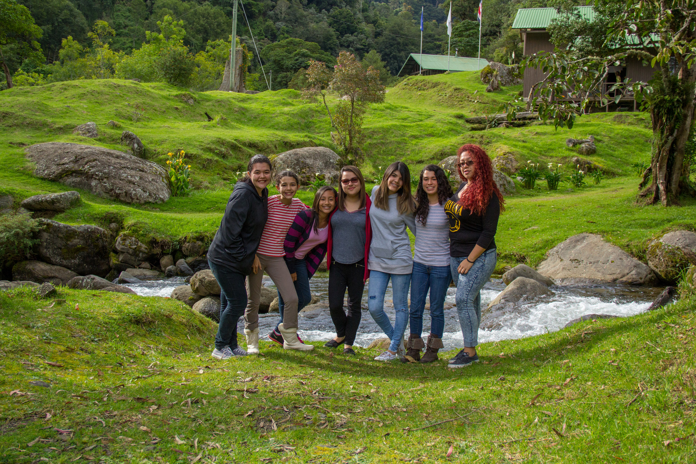
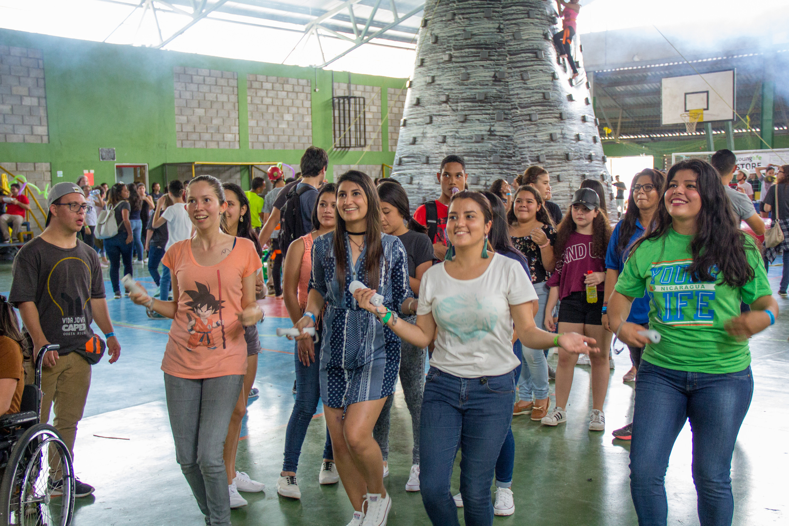
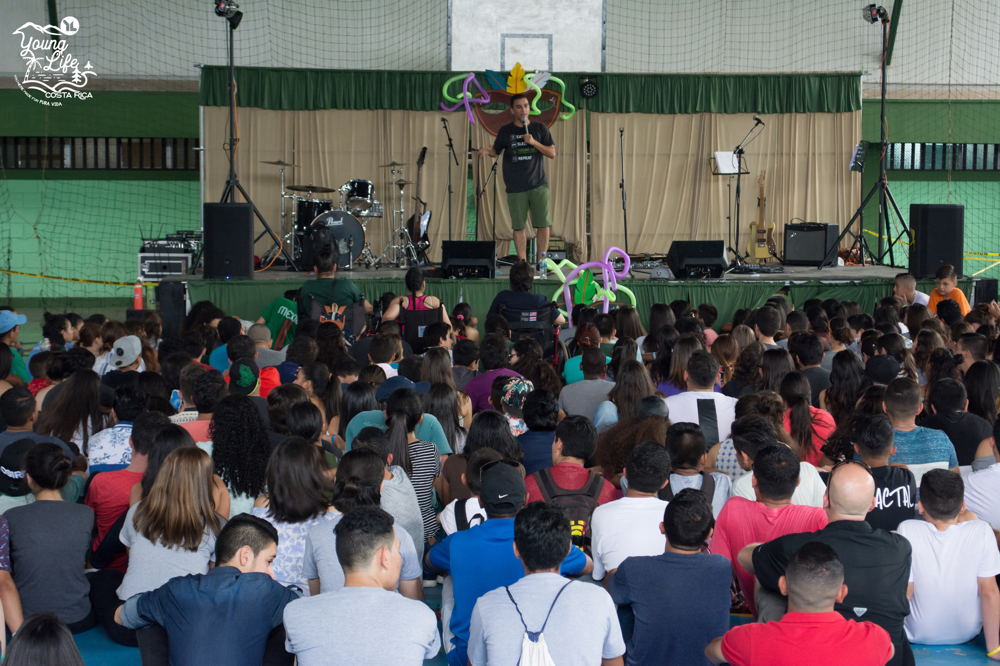
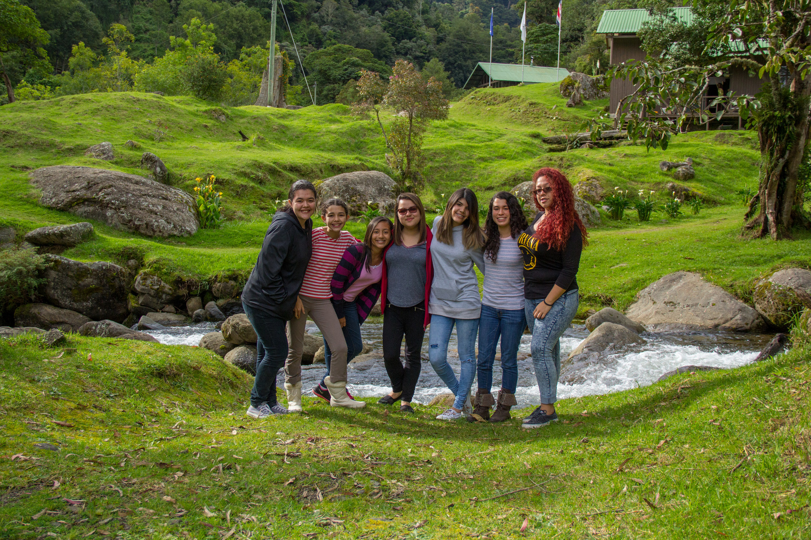
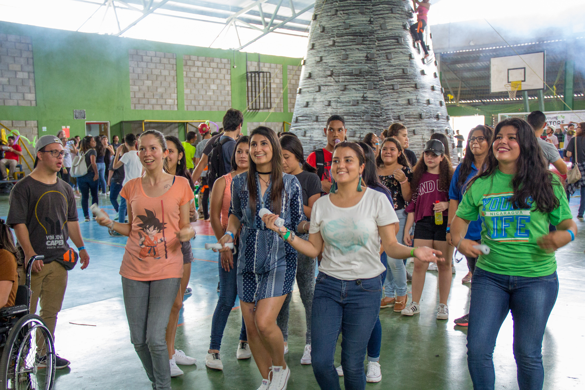
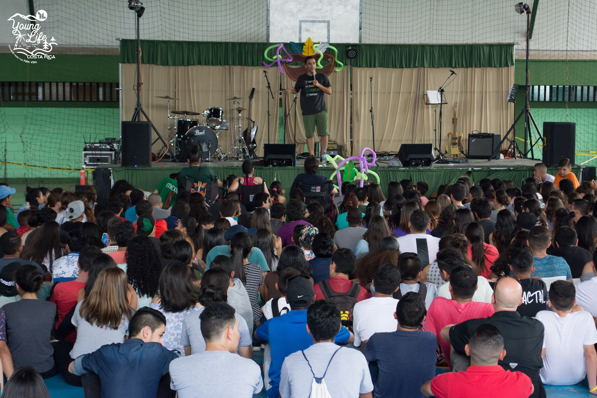
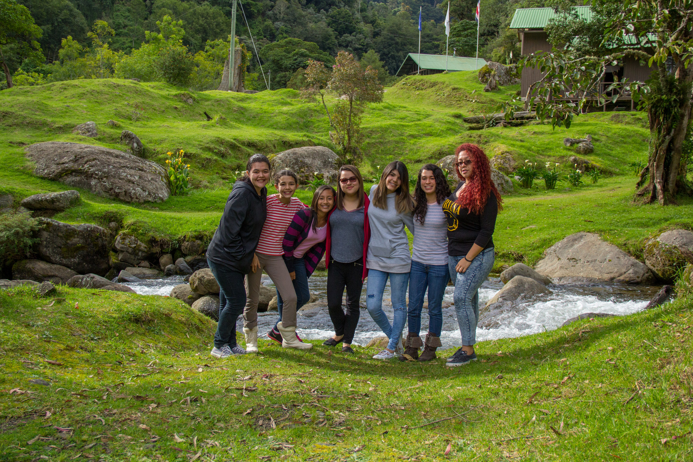
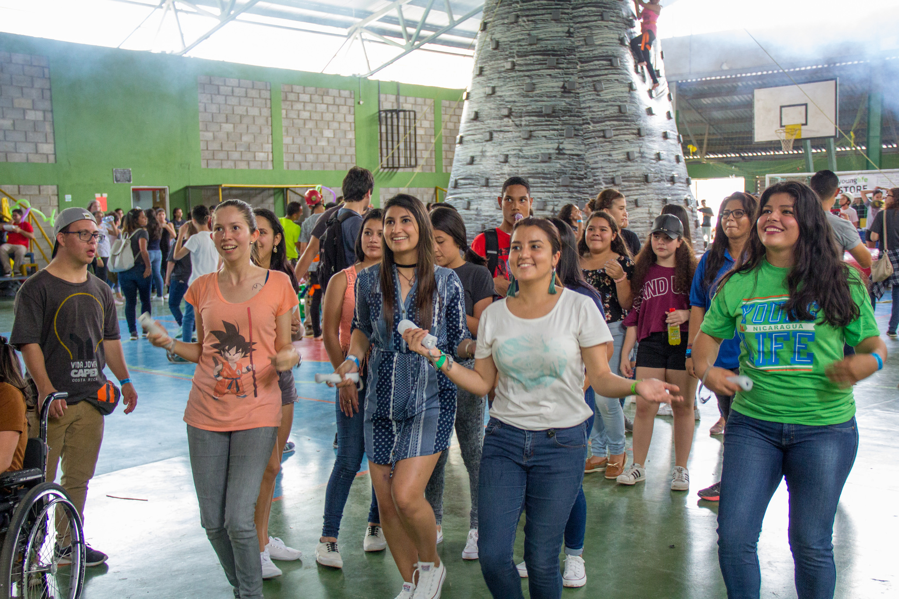
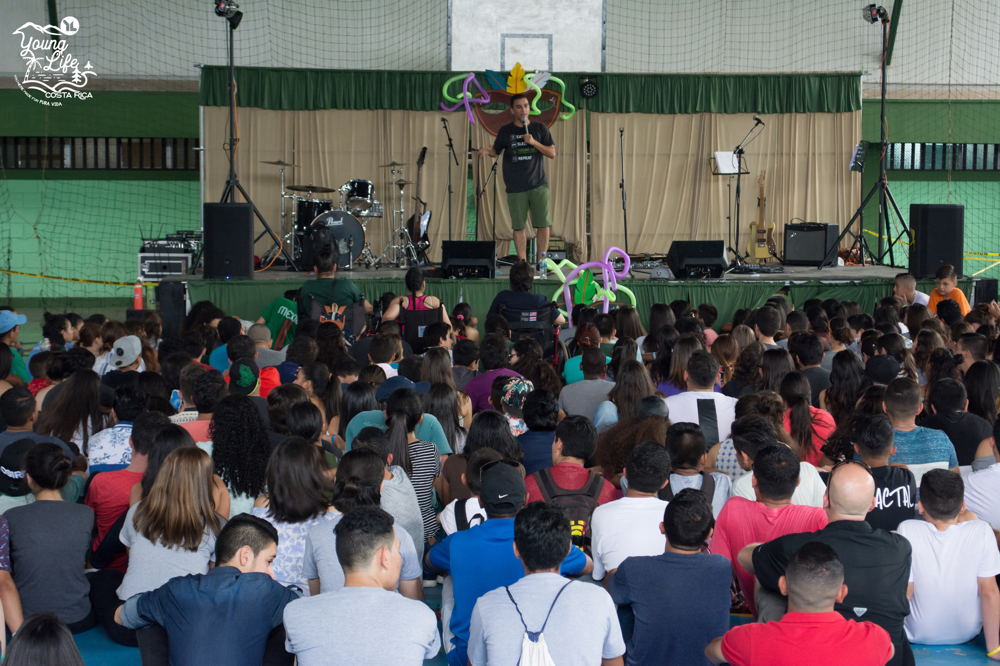

La Asociación Young Life (Vida Joven), es una organización que trabaja con adolescentes alrededor del mundo.
Nuestro interés principal consiste en desarrollar relaciones de amistad genuinas con los adolescentes, vamos donde ellos están, escuchamos sus historias y aprendemos lo que es importante para ellos, porque nos interesa conocer sus triunfos, alegrías, luchas y frustraciones.
Amamos a los jóvenes sin importar sus respuestas. Creemos en el poder que tiene estar presentes en sus vidas, por eso los líderes caminan al lado de ellos, compartiendo el amor que Dios les tiene. Gracias a que el líder de Vida Joven cree en ellos, los jóvenes empiezan a reconocer que sus vidas tienen un gran valor, significado y propósito.
Las decisiones que estos jóvenes tomen hoy, basadas en el amor que Dios les tiene, van a tener un impacto en sus decisiones futuras como: la carrera que estudiarán, matrimonio, trabajos, etc. Por eso creemos en la importancia de que el líder invierta tiempo con el joven, comparta la verdad sobre Jesús y lo acompañe durante su adolescencia.
Es una reunión semanal llena de energía y diversión. Es un tiempo donde se puede conocer gente, vacilar, jugar, ver obras de teatro chistosas y escuchar un mensaje sobre el amor de Dios.
Para muchos son los mejores 4 días de sus vidas! La aventura y la diversión hacen de éste un tiempo inolvidable. Es un ambiente propicio para que los líderes y jóvenes desarrollen una relación de amistad, donde a través del mensaje de Jesucristo, los jóvenes van a ser escuchados y motivados a reflexionar sobre sus vidas y sus relaciones con otras personas.
Es un espacio donde los jóvenes pueden hablar sobre asuntos más profundos sobre la fe y los retos que se presentan durante esa etapa. Consiste en un estudio bíblico semanal que anima a los jóvenes a crecer en su fe a través del estudio, el servicio y el liderazgo.
Mega clubs, paseos, campeonatos de fútbol, fiestas, etc.
Young Life (Vida Joven) nació en Texas, Estados Unidos en 1941 por el fundador Jim Rayburn, quien asumió el reto de acercarse a jóvenes desinteresados en conocer de Dios y desinteresados en asistir a una iglesia, de una manera personal y dinámica.
En 1981,se llevó a cabo el primer club de Vida Joven, que estaba bajo la responsabilidad de Vilma Delgado, Oldemar Escamilla y Marvin Asfahl.
Actualmente tiene presencia en más de 70 países alrededor del mundo.


